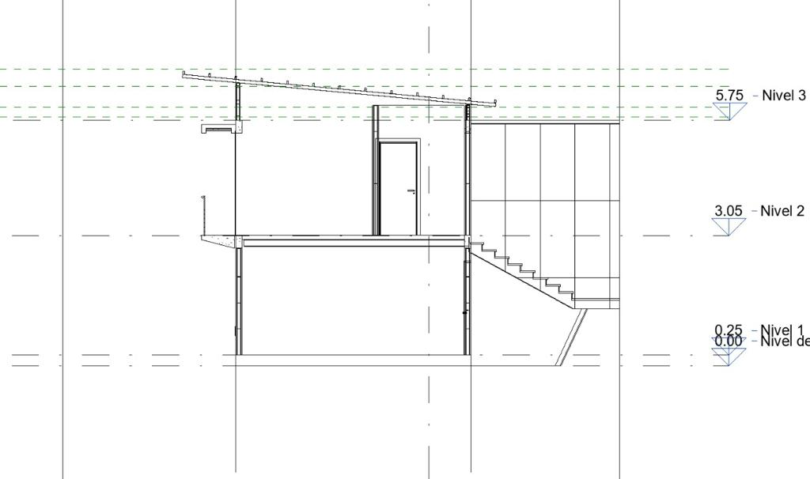

Después del anteproyecto y antes de la construcción, viene la creación de los planos constructivos. Al ser la única firma de arquitectos certificados ISO 9001 en Gestión de Calidad, nuestra producción de planos constructivos se destaca por ser eficiente y garantizar un margen de error mínimo. Es aquí donde reflejamos nuestra habilidad para orquestar especialistas en otras áreas como la producción de planos electromecánicos, eléctricos, y estructurales, así como ser rigurosos por los detalles y presupuestar los costos con gran precisión.